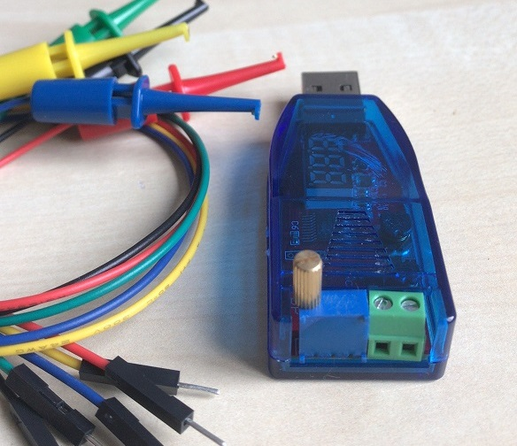

VariPower-USB-Light is a USB powered variable power supply(Buck and Boost). It is portable and ideal for traveling.
Occasionally, we need 1.8v, 3V, 3.7V, 5V, 7.4, 9, 12 or 18 volts to power a small circuit board while debugging firmware or hardware. Most variable power supplies on the market are large and expensive. They are inconvenient to carry while traveling. It can supply several hundred milliamps via a USB cable from your laptop or desktop computer.
In this version, the load current is not monitored. The power supply is continuously adjustable from around 1.2V to 4.8 V using a simple potentiometer. The voltage is shown on the 3-digit segment LED display.
Features: